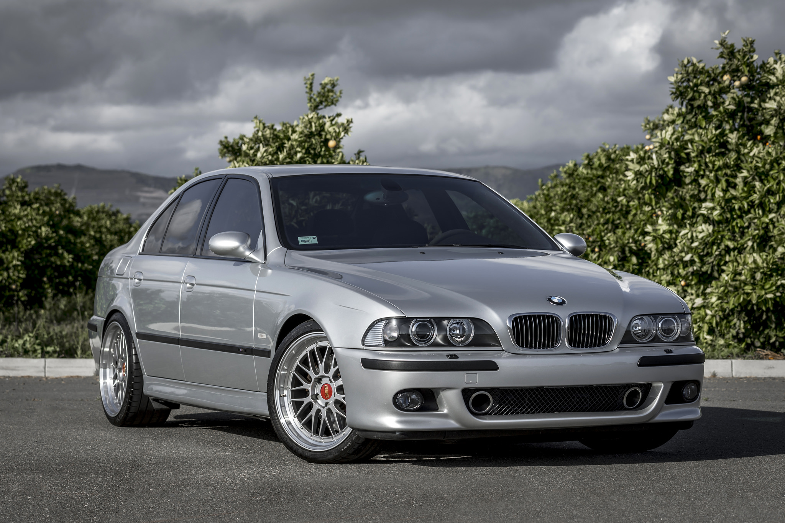

The BMW E39 is the fourth generation of BMW 5 Series, which was sold from 1995 to 2003. It was launched in the sedan body style, with the wagon/estate body style (marketed as "Touring") introduced in 1996. The E39 was replaced by the E60 in 2003, however E39 Touring models remained in production until December 2003.
The proportion of chassis components using aluminium significantly increased for the E39, and it was the first 5 Series to use aluminium components in the front suspension. It was also the first 5 Series where a four-cylinder diesel engine was available. Rack and pinion steering was used for the first time in a 5 Series, being was fitted to the E39 four-cylinder and six-cylinder models. Unlike its E34 predecessor and E60 successor, the E39 was not available with all-wheel drive.
The M5 sedan was introduced in 1998, powered by the 4.9-litre S62 V8 engine.

Development ran from July 1981 to early 1987, with the initial design proposal penned by Ercole Spada in 1982. Under the guidance of chief designer Claus Luthe, BMW based much of the design on the E32 7 Series. Following Spada's departure from BMW and styling approval in 1983, J Mays finalized the design for production in mid-1985. In December 1987, the E34 sedan was unveiled to global press.
Special attention was paid to aerodynamics, with the E34 having a drag coefficient of 0.30.
Production of the E34 commenced on November 2, 1987 for the 535i, with 535i market launch being in January 1988 and other variants following a staggered launch.